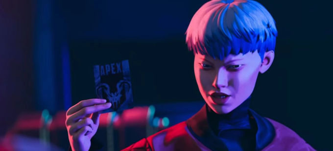

Apex Legends ha presentado el contenido de su Temporada 9 en su tráiler más reciente: Historias de las Tierras Salvajes: "Northstar", una clara referencia al universo de Titanfall. Podéis disfrutar del vídeo bajo estas líneas, y así echar un vistazo al nuevo personaje, Valkyrie. Junto a ella llega más contenido de la saga de ciencia ficción de Respawn, como Viper, así como nuevas armas y contenido que os detallamos a continuación. El estudio de desarrollo ya adelantó en su momento que esta novena temporada contaría con "un montón" de contenido de Titanfall.
el vídeo de 8 minutos nos presenta a la nueva Leyenda: su nombre en clave es Valkyrie, aunque realmente se llama Kairi Imahara, que es hija de Viper de Titanfall 2. La describen como un personaje "audaz, descarada y feroz" que ha crecido a la sombra del legado de su padre. "Ahora está lista para poner en marcha el suyo propio", es la descripción que podemos leer sobre el nuevo personaje. Las habilidades de Valkyrie que os detallamos a continuación se han extraído de los archivos del juego, por lo que puede que lleguen con cambios al lanzamiento. Aun así, os las dejamos por aquí para que os hagáis una idea:VTOL Jets (pasivo): mantén pulsado el salto para iniciar VTOL Jets, básicamente un jetpack que te permite flotar Cluster Missile (táctico): dispara un cohete que explota varias veces al impactar.Skyward (ultimate): presione una vez para preparar el lanzamiento, y los compañeros de equipo pueden unirse a la Ult en esta etapa. Presione de nuevo para lanzarse al aire y luego saltar en paracaídas.
el propio nombre del título del vídeo hace referencia a Northstar, una de las clases de titanes que podemos encontrar en Titanfall. Además, en el vídeo también se muestra a Viper, uno de los antagonistas de Titanfall 2. Llegados a este punto, parece que Respawn no tiene problemas a la hora de establecer puentes entre el battle royale Apex Legends y Titanfall 2. "Si sois fans de Titanfall, estad atentos a la novena temporada porque va a haber cosas muy chulas", adelantaba en su momento Chad Grenier, director de juego en Respawn. El vídeo también parece sugerir que Rampart es la responsable de traer los titanes al juego. De hecho, hacia el final del tráiler, podemos verla trabajando en un enorme titán.
Bockek Bow, un poderoso arco que será mortal en las manos de aquellos jugadores que puedan manejarlo. "Capaz de infligir un daño tremendo a medio alcance, tendrás que hacer que cada disparo cuente", dice la descripción. Por otro lado, en este nuevo capítulo del battle royale veremos cómo una plaga se apodera del Olimpo, así que tendremos que esperar para descubrir estas consecuencias. "Se ha desatado una plaga, estrangulando la ciudad con raíces y crecimientos naturales", dice la descripción de este evento.
editado y publicado el 25/04/2021